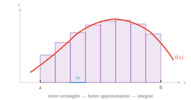
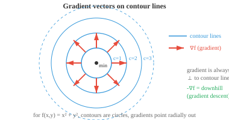
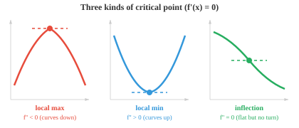
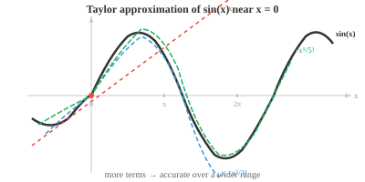
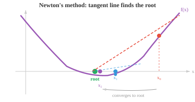
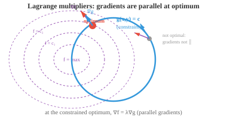
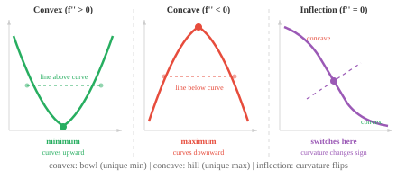

Maths, CS & AI Compendium · Chapter 03
Slope, Area, Descent
Training a model means walking downhill on a surface you cannot see, in a space with a million directions. That sounds exotic. It is not. You have done the two-dimensional version by hand, on paper, under exam conditions, every time you drew a bending moment diagram and marked the maximum where the shear crossed zero.
This chapter is calculus, and it splits into three moves. Slope: how fast is this changing right now. Area: how much has accumulated. And descent: given the slope, which way is downhill, and how far dare I step. You have strong physical instincts for the first two. The third is where machine learning lives, and where — honestly — your instincts start to mislead you, because the landscape ML walks on is not a physical one.
The bridge
| What you already use | What ML calls it | How good is the match? |
|---|---|---|
| \(V=\mathrm{d}M/\mathrm{d}x\), \(w=-\mathrm{d}V/\mathrm{d}x\) | Derivative | Identical. Your SFD/BMD rules are calculus. |
| "Max BM where SF crosses zero" | Critical point, \(f'(x)=0\) | Identical. Same theorem, exam-ready phrasing. |
| Area under the shear diagram | Definite integral | Identical. The Fundamental Theorem, applied. |
| Gear train ratio = product of stage ratios | Chain rule | Identical. Multiply local rates along the chain. |
| Fourier's law \(\mathbf{q}=-k\nabla T\) | Gradient descent | Same minus sign, same reason. See §03. |
| Isotherms perpendicular to heat flux | Contours perpendicular to gradient | Identical. Same diagram, relabelled. |
| Stiffness matrix \(K\) | Hessian of the objective | Exact: \(K=\partial^2U/\partial\mathbf{u}^2\). |
| Small-angle \(\sin\theta\approx\theta\) | First-order Taylor | Identical — and quantifiably wrong. See §05. |
| Newton–Raphson, tangent stiffness | Newton's method | The same algorithm, unusable at ML scale. |
| Constraint force in a pendulum rod | Lagrange multiplier \(\lambda\) | Exact. \(\lambda\) is the rod tension. |
| A design objective with one clear optimum | A deep learning loss surface | Nothing like it. See §08. |
The derivative is the slope of the tangent, defined as the limit of a secant slope as the two points merge:
The definite integral is the signed area under a curve, defined as the limit of a sum of thin rectangles. The Fundamental Theorem of Calculus says these two operations undo each other:
Presented cold, that theorem is a pair of formulas to memorise. You, however, have used it hundreds of times under a different name.
For a beam carrying distributed load \(w(x)\), shear \(V(x)\) and bending moment \(M(x)\), the relations you drilled are:
and, read the other way round, \(\Delta V=-\int w\,\mathrm{d}x\) and \(\Delta M=\int V\,\mathrm{d}x\). Every rule you were taught for sketching these diagrams is a calculus theorem in disguise:
- "The slope of the moment diagram is the shear" — that is differentiation.
- "The change in moment is the area under the shear diagram" — that is the Fundamental Theorem.
- "Under a UDL the shear is linear and the moment is parabolic" — integrating a constant gives a ramp; integrating a ramp gives a parabola.
- "Maximum bending moment occurs where the shear crosses zero" — that is the critical point condition \(\mathrm{d}M/\mathrm{d}x=0\).
You did not learn a set of drawing tricks. You learned calculus, indexed by a beam.

The differentiation rules follow the same pattern you already use: power rule \(\frac{\mathrm{d}}{\mathrm{d}x}x^n=nx^{n-1}\), product rule \((fg)'=f'g+fg'\), quotient rule, and the chain rule which gets its own section next. Integration reverses them: u-substitution reverses the chain rule, and integration by parts reverses the product rule.
Two more integrals you have already computed without calling them that: the second moment of area \(I=\int y^2\,\mathrm{d}A\), and the work done by a varying force \(W=\int F\,\mathrm{d}x\) — the area under the force–displacement curve, which for a spring gives the familiar \(\tfrac12kx^2\).
When functions are nested, their derivatives multiply along the chain:
A three-stage reduction with ratios \(r_1,r_2,r_3\) has overall ratio \(r_1r_2r_3\). Written as rates,
which is the chain rule exactly. And it carries a warning you already understand: if one stage has a ratio of \(1/50\), the whole train barely turns, no matter what the other stages do. A long product of small local derivatives collapses toward zero. In deep networks that is called the vanishing gradient problem, and it is the same arithmetic — early layers receive almost no signal because it was multiplied down through every stage above them. The mirror failure, one stage with a large ratio blowing the product up, is the exploding gradient.

What backpropagation actually contributes
The source chapter says backpropagation is the chain rule applied repeatedly. True, but it undersells the idea, and the missing half is the reason training a billion-parameter model is possible at all. The chain rule tells you what to multiply. It does not tell you in what order, and the order is everything.
A loss function maps \(n\) parameters to one number, \(L:\mathbb{R}^n\to\mathbb{R}\), with \(n\) in the billions. There are two ways to evaluate the chain of derivatives:
| Mode | Sweeps the chain | Gets you | Cost for \(n\) parameters |
|---|---|---|---|
| Forward | Inputs → output | Sensitivity of all outputs to one input | n passes |
| Reverse | Output → inputs | Sensitivity of one output to all inputs | 1 pass |
Backpropagation is reverse mode. One forward pass to compute the loss, one backward pass to get every partial derivative, at roughly two to three times the cost of the forward pass alone — regardless of how many parameters there are. Forward mode would need one pass per parameter. That asymmetry, not the chain rule, is the engineering insight.
In structural and shape optimisation there are two ways to get sensitivities of a response to many design variables: the direct differentiation method, costing one solve per design variable, and the adjoint method, costing one extra solve total regardless of how many variables there are. Anyone who has run topology optimisation has relied on the adjoint. Backpropagation is that same trick, and reverse- mode automatic differentiation is its general form.
A partial derivative nudges one variable and holds the rest fixed. The gradient collects them into a vector:
It has two properties worth stating carefully. It points in the direction of steepest increase, and its magnitude \(\|\nabla f\|\) is the rate of increase in that direction. The directional derivative along any unit vector \(\mathbf{u}\) is a dot product — Chapter 01 paying off:
Read that geometrically and the whole of gradient descent falls out of it. The dot product is most negative when \(\cos\theta=-1\), that is when \(\mathbf{u}\) points exactly opposite the gradient. So steepest descent is \(-\nabla f\) — not a definition, a consequence of the cosine.
Heat conduction obeys \(\mathbf{q}=-k\nabla T\). Heat flows down the temperature gradient, at a rate proportional to its steepness. The minus sign is the entire content of the law. Now compare the update rule that trains every neural network on earth:
Same minus sign, same reason. Fick's law for diffusion and Darcy's law for seepage have the identical shape. And the picture is the one from your heat transfer notes: isotherms are contour lines, heat flux lines cross them at right angles, and tightly packed isotherms mean steep gradients and fast flow. Every statement in the source chapter about contours and gradients is a statement you have already drawn.

For vector-valued functions, the Jacobian stacks one gradient per output row. You have used one: a manipulator's \(\mathbf{v}=J\dot{\mathbf{q}}\) is the Jacobian of the forward kinematics map, and Chapter 02's singular configurations were exactly the points where \(\det J=0\).
The gradient is first-order information: which way is downhill. The Hessian is second-order: how the surface curves.
By Clairaut's theorem, mixed partials commute for functions with continuous second derivatives, so \(H\) is symmetric — which by Chapter 02's spectral theorem gives it real eigenvalues and orthogonal eigenvectors. That chain of consequences is worth tracing, because it is what makes the second derivative test work at all.
Strain energy for a linear structure is \(U(\mathbf{u})=\tfrac12\mathbf{u}^TK\mathbf{u}\). Differentiate twice:
The gradient of strain energy is the force vector, and the Hessian of strain energy is the stiffness matrix. So every fact from Chapter 02 transfers directly: \(K\) positive definite means a stable equilibrium at a strict energy minimum; a zero eigenvalue means a direction that costs no energy, which is a mechanism or a buckling mode at its critical load. When an ML text says "a positive definite Hessian certifies a local minimum", it is stating the stability criterion you already apply to structures.
The second derivative test then reads exactly as you would expect:
One more consequence, and it is the one that matters most in practice. The condition number \(\kappa=\lambda_{\max}/\lambda_{\min}\) of the Hessian measures how elongated the bowl is. A \(\kappa\) near 1 is a round bowl and gradient descent runs straight to the bottom. A large \(\kappa\) is a long narrow valley, and descent zigzags across it, making painful progress along its floor. §06 shows this happening. It is the same \(\kappa\) that ruins a sliver-shaped finite element.

A Taylor series rebuilds a function near a point out of its derivatives there — value, then slope, then curvature, then finer and finer detail:
Truncate after the linear term and you have linearisation: replace the curve by its tangent. You have done this constantly — linearising a system about an operating point in control theory, assuming small strains, using \((1+x)^n\approx 1+nx\) in an error estimate.
And once, very early, you did it to a pendulum.
The pendulum equation is \(\ddot{\theta}+\frac{g}{L}\sin\theta=0\), which has no elementary solution. Every textbook then says "for small angles, \(\sin\theta\approx\theta\)", giving \(\ddot{\theta}+\frac{g}{L}\theta=0\) — simple harmonic motion, with \(T_0=2\pi\sqrt{L/g}\). That substitution is the first term of \(\sin\theta=\theta-\theta^3/3!+\theta^5/5!-\cdots\), and the famous result that the period is independent of amplitude is an artefact of the truncation, not a property of pendulums.
That is not a criticism — it is the honest accounting that makes the approximation usable. The error is quantifiable. Carrying the expansion further gives the true period as
and so the small-angle assumption costs you:
| Amplitude θ₀ | True period / T₀ | Error in the SHM answer |
|---|---|---|
| 5° | 1.0005 | 0.05% — unmeasurable |
| 30° | 1.0174 | 1.7% — visible on a stopwatch |
| 60° | 1.0732 | 7.3% — the model is misleading |
| 90° | 1.1803 | 18.0% — the model is wrong |

In several variables the second-order Taylor expansion is the one that matters, because it is the quadratic model every serious optimiser is built on:
Value, gradient, Hessian. Compare it with \(U=\tfrac12\mathbf{u}^TK\mathbf{u}\) and the structure is identical: near any minimum, every smooth function looks like a linear elastic structure, with the Hessian playing the stiffness matrix. That is why elastic intuition transfers so well to optimisation, and it is also the approximation Newton's method jumps to the bottom of.
Critical points are where \(f'(x)=0\), and the second derivative test sorts them into minima, maxima and inflections. A function is convex when it curves upward everywhere, and convexity buys you an enormous guarantee: every local minimum is the global minimum. Roll a ball into a convex bowl and it finds the bottom.
Gradient descent takes repeated steps downhill:
Everything hinges on \(\alpha\), the learning rate. Too small and you crawl; too large and you overshoot and diverge. That trade-off is not a quirk of machine learning — it is a stability condition you have already met.
Consider the continuous version, \(\dot{\boldsymbol\theta}=-\nabla f\). This is gradient flow, and it is a diffusion equation — the system relaxing toward equilibrium exactly as a temperature field relaxes. Gradient descent is that ODE integrated with the simplest explicit scheme, forward Euler, and \(\alpha\) is the timestep.
Explicit time integration is only conditionally stable. On a quadratic with Hessian eigenvalues \(\lambda_i\), gradient descent converges if and only if
Compare the critical timestep for explicit central-difference dynamics,
\(\Delta t_{\text{crit}}=2/\omega_{\max}\). The operators differ — first-order
relaxation here, second-order dynamics there — but the mechanism is the same one:
an explicit scheme stays stable only while the step is small enough for the
fastest mode in the system, and both limits take the form 2 over that mode's
characteristic rate. A loss that
explodes to NaN because the learning rate was too high is the same failure as
an explicit FEM run going unstable because one tiny stiff element pushed
\(\omega_{\max}\) up. You have debugged this before.
NaN. The cruel part is that raising \(\kappa\) lowers the limit, so
the harder the problem, the smaller the step you are allowed.
Newton's method, and why ML cannot use it
Newton's method for a root is \(x_{n+1}=x_n-f(x_n)/f'(x_n)\); applied to \(f'=0\) for optimisation it becomes, in several variables,
Fit the local quadratic from §05, jump to its minimum, repeat. Convergence is quadratic — correct digits roughly double each step — and it is scale-free: because \(H^{-1}\) undoes the conditioning, the zigzag in the panel above disappears entirely. You have run this as Newton–Raphson in numerical methods, and nonlinear FEM runs it with the tangent stiffness matrix as \(H\).
For a model with \(n=10^9\) parameters the Hessian has \(10^{18}\) entries. At 4 bytes each that is four billion gigabytes, and inverting it costs \(O(n^3)=10^{27}\) operations. It is not slow, it is impossible — by a margin of many orders of magnitude. So deep learning abandons the better algorithm and uses first-order methods that only ever touch \(\nabla f\), patching the conditioning problem with momentum and per-parameter step sizes instead. Adam, the default optimiser, is essentially gradient descent with a running estimate of each parameter's own scale. To a numerical analyst it looks crude. At \(10^9\) parameters it is what fits.

Real problems come with restrictions: minimise mass subject to a stress limit, maximise stiffness subject to a volume budget. Lagrange multipliers handle equality constraints. To optimise \(f\) subject to \(g=c\), form
and set every partial derivative to zero. The geometric content is worth more than the recipe: at a constrained optimum the two gradients must be parallel, \(\nabla f=\lambda\nabla g\). If they were not, some direction along the constraint surface would still improve \(f\), so you would not be at the optimum.
In analytical mechanics, a constrained system is handled the same way, and the multipliers are not bookkeeping — they are the constraint forces. For a pendulum, the constraint is that the bob stays at fixed radius, and the multiplier enforcing it is the tension in the rod. This generalises: \(\lambda\) is always the sensitivity of the optimum to relaxing the constraint by one unit. In a minimum-mass design under a stress limit, \(\lambda\) tells you how much mass you would save per unit of extra allowable stress — which economists call a shadow price and engineers call a trade-off study.
For inequality constraints, the KKT conditions generalise this: each constraint is either active and behaves like an equality, or inactive and can be ignored because the optimum sits in the interior. That is the same case split you make when checking whether a design is limited by strength or by deflection.

Where optimisation stops being physics
beyond the chapterEverything so far transferred cleanly. This section is the bill. Four things about machine learning optimisation have no counterpart in the design problems you have solved, and each one breaks an instinct that has served you well until now.
Everyone's mental picture of non-convex optimisation is a 2-D curve with several valleys, where the danger is getting stuck in the wrong one. In high dimensions that picture is wrong.
A critical point is a minimum only if every one of the Hessian's \(n\) eigenvalues is positive. With \(n\) in the millions, that is an extraordinarily strong demand, and for a randomly-structured surface the overwhelming majority of critical points have at least one negative eigenvalue — they are saddle points. Worse, they come surrounded by plateaus where the gradient is tiny and progress nearly stops, which feels exactly like being stuck in a minimum while being nothing of the sort. Your 2-D intuition diagnoses the wrong disease. This is Chapter 01's high-dimensional warning again, wearing different clothes.
This is the one that will feel genuinely wrong. When you solve \(K\mathbf{u}=\mathbf{F}\) you want the exact answer, and a smaller residual is strictly better. In machine learning it is not.
The quantity being minimised is the error on the training data. The quantity anyone cares about is the error on data the model has never seen. Drive the first to zero and you will typically have fitted the noise in your sample — the model memorises the measurement error and performs worse on anything new. This is overfitting, and it means the objective function is a proxy for the real goal, not the goal.
So practitioners deliberately handicap the optimiser: stop early, add penalty terms, inject noise. Imagine deliberately under-converging a finite element solve because the fully converged answer would be less trustworthy. That is the situation, and there is no mechanical analogue for it. The closest honest parallel is fitting a curve through scattered experimental points: a high-order polynomial through every point has zero residual and no predictive value.
§01 said differentiability requires no sharp corners. ReLU, \(\max(0,z)\), has a corner at exactly zero — and it is the most widely used activation function in the field. Frameworks simply declare a value at the kink (usually 0) and carry on. The justification is real but technical: the non-differentiable points form a set of measure zero, and the correct object is a subgradient rather than a gradient. The practical position is that the theory was extended to cover what was already working. Do not let the rigour of §01 make you think ML obeys it.
Stochastic gradient descent computes the gradient on a small random batch of data rather than all of it, so every step is a noisy estimate of the true descent direction. The obvious reading is that this is a compromise for speed. It is also, apparently, good for the result: the noise helps escape the saddle plateaus of point 1 and tends to find minima that generalise better. An engineer's instinct is that a noisier measurement gives a worse answer. Here a noisier gradient often gives a better model, for reasons that remain an active research question rather than a settled theory.
None of this invalidates §§01–07. The calculus is exactly as stated; the chain rule, the gradient, the Hessian and the stability limit all hold without qualification. What changes is the context the calculus is applied in, and the context is stranger than any structure you have analysed.

Worked example: choosing a step size
Minimise \(f(x,y)=\tfrac12(10x^2+y^2)\) starting from \((1,1)\). This is the quadratic model of §05 with \(H=\begin{bmatrix}10&0\\0&1\end{bmatrix}\), so \(\lambda_{\max}=10\), \(\lambda_{\min}=1\), and \(\kappa=10\).
The gradient is \(\nabla f=(10x,\,y)\), so a descent step multiplies each coordinate by a fixed factor:
Convergence needs both factors below 1 in absolute value, so \(|1-10\alpha|<1\), giving the stability limit \(\alpha<2/\lambda_{\max}=0.2\). Test it on both sides.
| k | α = 0.18 (x, y) | α = 0.21 (x, y) |
|---|---|---|
| 0 | (1.000, 1.000) | (1.000, 1.000) |
| 1 | (−0.800, 0.820) | (−1.100, 0.790) |
| 2 | (0.640, 0.672) | (1.210, 0.624) |
| 3 | (−0.512, 0.551) | (−1.331, 0.493) |
| 4 | (0.410, 0.452) | (1.464, 0.390) |
| … | converges |x| = 0.8ᵏ | diverges |x| = 1.1ᵏ |
Note what the converging column is doing: \(x\) flips sign every step while shrinking by \(0.8\), which is the zigzag across the valley floor drawn in the §06 panel. But \(y\) shrinks by only \(0.82\) per step, and it is the slower coordinate that decides when you are done: reaching 1% of the starting value takes \(\ln(0.01)/\ln(0.82)\approx 24\) steps — for a two-variable quadratic with no noise. The stiff direction sets the largest step you may take; the soft direction sets how long you must keep taking it.
The best possible constant step is \(\alpha^\ast=2/(\lambda_{\max}+\lambda_{\min})=2/11\approx0.1818\), which makes both factors equal to \((\kappa-1)/(\kappa+1)=9/11\approx0.818\). That ratio is the fundamental speed limit of gradient descent on this problem: no constant step size does better. At \(\kappa=100\) it becomes \(0.980\) per step, meaning roughly 230 steps for the same 1% progress. Conditioning, not the algorithm, is what makes optimisation slow — and it is the same \(\kappa\) you avoided in your meshes.
Read \(H\) as a stiffness matrix and this is a two-degree-of-freedom system with stiffnesses 10 and 1, relaxing to equilibrium under an explicit integration scheme. The stiff mode sets the largest stable timestep; the soft mode sets how long you must wait. One stiff element forcing a tiny timestep on the whole model, while a soft mode takes forever to settle, is a situation you have already met.
Shadow reading
Q1State the Fundamental Theorem of Calculus in the language of beam diagrams.
\(\mathrm{d}M/\mathrm{d}x=V\) and \(\Delta M=\int V\,\mathrm{d}x\): the slope of the moment diagram is the shear, and the change in moment is the area under the shear diagram. Differentiation and integration undo each other, which is why you can build either diagram from the other.
Q2Why does maximum bending moment occur where shear crosses zero?
Because \(\mathrm{d}M/\mathrm{d}x=V\), so \(M\) is stationary exactly where \(V=0\). It is the critical point condition \(f'(x)=0\) with the symbols renamed. Whether that stationary point is a maximum depends on the sign change of \(V\), which is the second derivative test.
Q3What does a gear train tell you about vanishing gradients?
The overall ratio is the product of the stage ratios, exactly as the chain rule multiplies local derivatives along a chain. One stage with a ratio of \(1/50\) makes the whole train barely turn, regardless of the others. In a deep network, small local derivatives multiply down through the layers so early layers receive almost no gradient signal.
Q4Backpropagation is "the chain rule". What does that description leave out?
The evaluation order. The chain rule says what to multiply, not in which direction to sweep. A loss is \(\mathbb{R}^n\to\mathbb{R}\), so reverse mode gets all \(n\) partials in one backward pass, while forward mode would need \(n\) passes. With \(n\sim10^9\) that ordering choice is the whole ballgame. It is the same economy as the adjoint method in structural optimisation.
Q5Relate the learning rate to a quantity you already tune.
It is a timestep. Gradient descent is forward-Euler integration of the gradient flow \(\dot{\boldsymbol\theta}=-\nabla f\), and explicit schemes are only conditionally stable: \(\alpha<2/\lambda_{\max}\). A loss exploding to NaN is the same instability as an explicit dynamics run violating its critical timestep.
Q6Why is the Hessian of strain energy the stiffness matrix?
\(U=\tfrac12\mathbf{u}^TK\mathbf{u}\), so \(\nabla U=K\mathbf{u}=\mathbf{F}\) and \(\partial^2U/\partial\mathbf{u}^2=K\). Hence positive definite \(K\) means a strict energy minimum, i.e. a stable equilibrium, and a zero eigenvalue is a mechanism or a buckling mode — the second derivative test and the stability criterion are the same statement.
Q7What does the small-angle assumption actually cost at 60°?
About 7.3% in the pendulum period. \(\sin\theta\approx\theta\) is the first Taylor term, and the true period is \(T=T_0(1+\theta_0^2/16+11\theta_0^4/3072+\cdots)\). The amplitude-independence of SHM is an artefact of the truncation, not a property of pendulums. At 5° the error is 0.05%; at 90° it is 17.6%.
Q8Newton's method converges quadratically and is scale-free. Why does deep learning not use it?
Memory and time. With \(n=10^9\) parameters the Hessian has \(10^{18}\) entries and inverting it is \(O(n^3)\). It is impossible by many orders of magnitude, so the field uses first-order methods and patches conditioning with momentum and per-parameter step sizes — which is essentially what Adam does.
Q9In high dimensions, what is the real obstacle to optimisation?
Saddle points, not local minima. A critical point is a minimum only if all \(n\) Hessian eigenvalues are positive, which is a very strong condition when \(n\) is large; most critical points therefore have a negative direction. They sit in plateaus with tiny gradients that feel like being stuck without being minima at all.
Q10Why would anyone deliberately stop an optimiser before it converges?
Because the training loss is a proxy for generalisation error, not the goal itself. Driving it to zero usually means fitting the noise in the sample — overfitting — and the model then performs worse on unseen data. So practitioners stop early, add penalties, and inject noise. It is the difference between a high-order polynomial through every scattered data point and a straight line that predicts.
Q11What is the Lagrange multiplier, physically?
A constraint force. For a pendulum it is the tension in the rod enforcing fixed radius. More generally \(\lambda\) is the sensitivity of the optimum to relaxing the constraint by one unit — the mass saved per unit of extra allowable stress, say. At the optimum \(\nabla f=\lambda\nabla g\): the gradients are parallel, or you could still improve along the constraint.
What this chapter feeds
Chapters 04 and 05 are statistics and probability, and the integral is the handover: a probability density is a curve whose area is a probability, and an expected value is an integral weighted by that density. If you have computed a centroid as \(\bar{x}=\int x\,\mathrm{d}A/\int \mathrm{d}A\), you have already computed an expected value — the mean of a distribution is the centroid of its density, and the variance is its second moment of area. That correspondence is exact, and it is the spine of the next two chapters.
Do the source chapter's fourth coding task — the forty-line autodiff engine. It is the single most clarifying exercise in the chapter: you will see that the machinery behind PyTorch is a graph of operations, each storing how to pass a derivative backwards, and nothing more mysterious than that. Then go back to the §06 panel, set \(\kappa=40\), and find the largest learning rate that still converges. The number you land on is \(2/\lambda_{\max}\), and feeling it will stick better than reading it.
Provenance and changes
This page is a derivative work. The compendium is Apache-2.0 licensed, which requires a
statement of what was changed — and independently of the licence, you should be able
to see where I followed the source and where I departed from it. Every source reference on
this page is also a link to the original file, pinned to commit
9850ee5 so it cannot drift.
| Section | Title | Source | Verdict | What changed |
|---|---|---|---|---|
| §00 | The bridge | — | added | Mapping table is mine. |
| §01 | Slope and area | 01, 02 | faithful | Derivative, integral and the Fundamental Theorem as in source. The beam-diagram reading is added. |
| §02 | Chain rule & backprop | 01, 03 | expanded | Source says backpropagation is the chain rule applied repeatedly. True but incomplete: the forward versus reverse mode distinction, which is what makes it tractable, is added. |
| §03 | The gradient | 03 | faithful | Partials, gradient, directional derivative, Jacobian as in source. Fourier's law parallel is added. |
| §04 | The Hessian | 03 | faithful | Clairaut, the second derivative test and conditioning follow the source. K as the Hessian of strain energy is added. |
| §05 | Taylor & small angles | 04 | expanded | Taylor and Maclaurin series as in source. The pendulum error table is added — and was itself wrong on first publication, printing the two-term series as though it were the exact period. Corrected to elliptic-integral values; see verify_claims.py. |
| §06 | Descent | 05 | faithful | Critical points, convexity, gradient descent, Newton, optimiser families as in source. The learning-rate-as-timestep reading and the stability limit are added. |
| §07 | Constraints | 05 | faithful | Lagrange multipliers and KKT as in source. The constraint-force interpretation is added. |
| §08 | Where it stops being physics | — | added | Entirely mine, and flagged on the page. |
| §09 | Worked example | — | added | Mine. |
Companion to Chapter 03 — Calculus of the Maths, CS & AI Compendium by Henry Ndubuaku. Figures marked from the compendium are reproduced from the repository. §08 is added material and is marked as such.
Sheet 3 of 20. Built for a mechanical engineer with GATE-level mathematics and no prior CS.